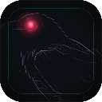
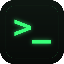
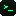
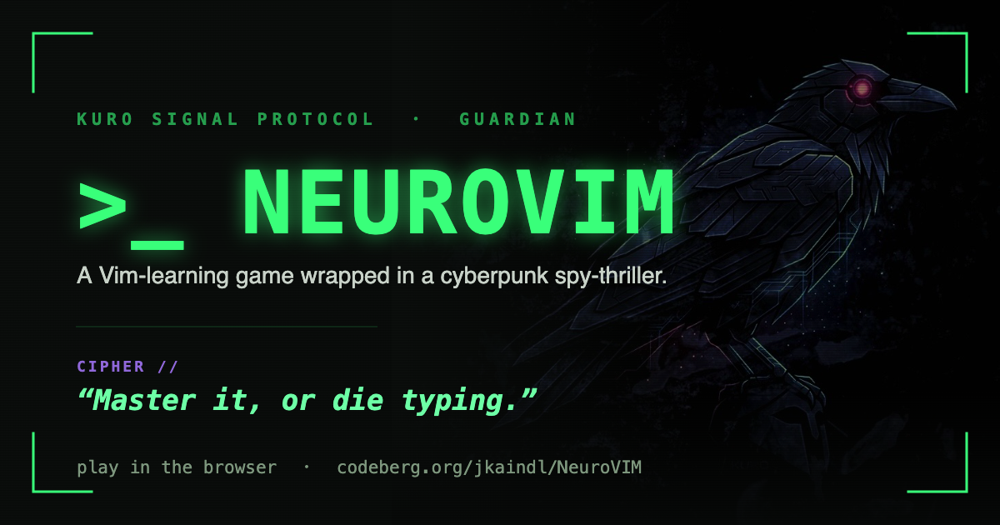

Two marks for two distances. The corvid — Kuro, the familiar that watches the vault — carries the app at large sizes; the crimson eye is the single point of focus. The >_ terminal glyph carries it small, where photographic detail would muddy. Phosphor signals active; crimson signals focus. Built on the void ground, JetBrains Mono witnesses.

96Kuro at silhouette — the mechanical corvid reading at its eye, lit only where the light catches. A faint phosphor circuit ring marks the Guardian aspect; an additive crimson bloom earns the eye its place as the one bright thing in a dark chamber.
icon-1024.png — feed to npx tauri icon
icon-128 / 64 / 32.png — raster fallbacks

48
16At a 16px tab the corvid collapses to noise — honesty (Law 6) says a mark that can't be read shouldn't pretend to be one. The >_ prompt is NeuroVim's terminal identity distilled: phosphor on void, glowing, unmistakable down to 16px. Same squircle, same ground — one family, two scales.
favicon-512.png · favicon-180.png (apple-touch)
favicon-64 / 48 / 32 / 16.png

Key art reserved for the hero moment, per protocol — the familiar perched on the right, melted into the void by a protection gradient so the wordmark breathes. Scanlines and corner brackets carry the diegetic HUD; the CIPHER line keeps the spy-thriller voice.